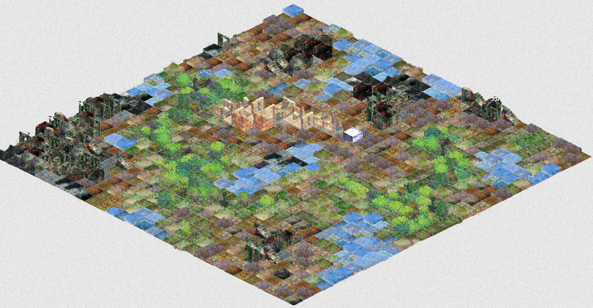

Lichenia
A city building game for the Anthropocene. Reclaim the ruins of a fallen city and create a sustainable human habitat.There are no goals and no endings in Lichenia. Learn about its cryptic ecology. Grow a city like a garden.
Left click or drag to move a cube / Right click to remove it
Q+E or right click to change zoom - WASD or drag to move camera
Lichenia is the second chapter of the Playable Cities series after Nova Alea.
You can read some notes about the game here.
All the isometric graphics are derived from Mushy, a neural network generated tileset by Everest Pipkin.
Lichenia is made with the javascript library p5.js and the add-on p5.play.
Molleindustria, 2019.
